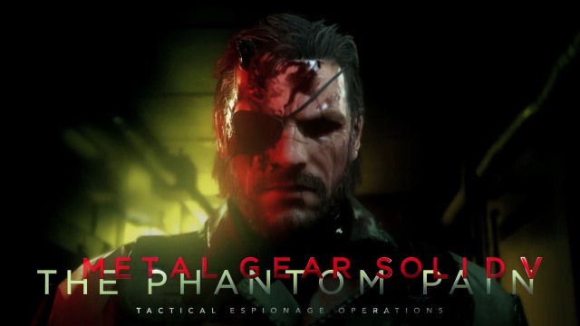
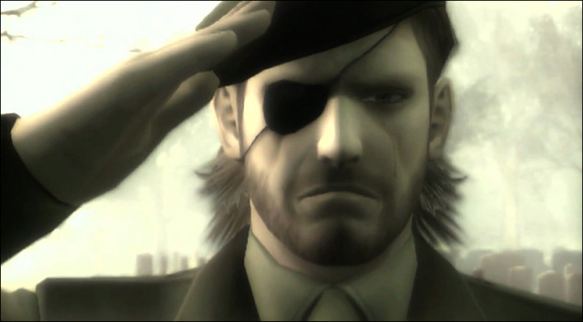
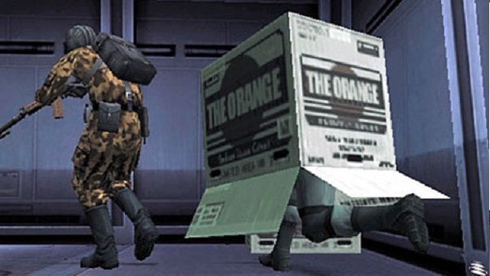
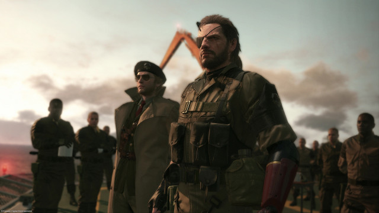
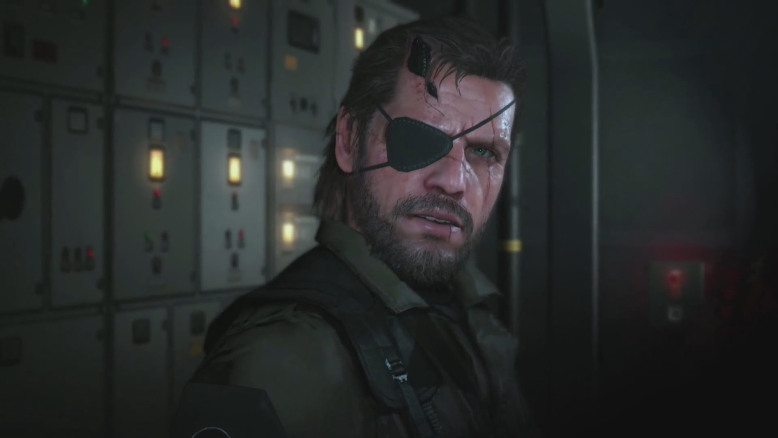
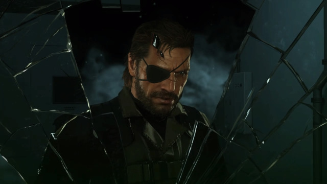
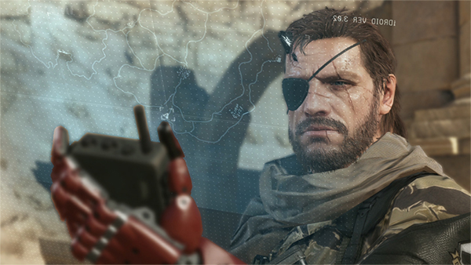

This four five six-part article (including the introduction) is currently over 21,000 27,000 words long, thereby making it by far the largest thing I have ever written for Theory of Objective Video Game Aesthetics or gamingrebellion.com (where I write a weekly article). I may add more to this piece later, but I really want to hear more feedback from the Metal Gear community. For one, I wrote and edited this thing all by myself, so I’m sure there are random typos and Metal Gear lore errors that I need help sniffing out. But I also want to get feedback on my overall points and structure (and a pithier title would be nice). Any and all feedback, good and bad, is welcome.
How do you remember? Who you are? What you were meant to do? I cheated death, thanks to you. And thanks to you I’ve left my mark. You have too – you’ve written your own history. You’re your own man. I’m Big Boss, and you are too… No… He’s the two of us. Together. Where we are today? We built it. This story – this “legend” – it’s ours. We can change the world – and with it, the future. I am you, and you are me. Carry that with you, wherever you go. Thank you… my friend. From here on out, you’re Big Boss.”
– Big Boss
When I first finished Metal Gear Solid V: The Phantom Pain, like so many other players, I was disappointed. MGSV was supposed to be the “Missing Link” in the Metal Gear canon. It was that game that would reveal the bridge between the heroic Big Boss of MGS 3, Portable Ops, and Peace Walker, and the grand historical villain of Metal Gear 1 and 2. As expressed by numerous launch trailers and Hideo Kojima tweets, MGSV was going to be a tale of Big Boss’s fall into darkness, driven by an insatiable lust for revenge, a consummate anger lit by his enemies which would scorch his soul until nothing was left but a power hungry mad man who would threaten the world with nuclear war for the sake of his power-hungry ambitions.
Instead we got an incredibly weird twist which did little more than retcon patch a largely ignored plot hole in one of the least-played Metal Gear games. We found out that the final boss of Metal Gear 1 was not Big Boss, but a body double, who through surgery and hypnotherapy was made into almost an exact copy of the legendary soldier.
Again, like most other players, when I first finished the game I thought this was a neat trick, a typically crazy, convoluted, but seductively entertaining twist from one of my favorite story tellers of all time. But of course… it was also a major let down.
Finding out that I had just played as some random ass medic from Militaires Sans Fronteres for the last 80 hours instead of the most important character in the entire Metal Gear canon was certainly a mind-fuck, but also left me feeling deflated. What was the point of it all? Why did I just follow some entirely new character for an entire game who has only a minor, tangential connection to the series’ larger plot instead of seeing Big Boss’s moral/psychological/narrative transformation which is at the heart of the entire series and was supposed to be the entire point of Metal Gear Solid V?

It wasn’t until I had put over 200 hours into my save file and replayed the entire game for a second time that the impact of Metal Gear Solid V’s story really hit me. Not only does MGSV do exactly what it was advertised to do, reveal the descent of Big Boss from hero to villain, but it does so in a subtle and narratively ambitious manner at a depth not seen in any video game since Metal Gear Solid 2: Sons of Liberty.
MGSV is the story of Big Boss’s fall from grace, but it’s also so much more than that. MGSV may very well be Kojima’s magnum opus. The game distills all of the Metal Gear series’ most important thematic elements into a relatively simple story with a deceptively small scale. The reason the vast majority of players didn’t realize this is because, well, Kojima can be too subtle for his own good.
I know that’s a weird claim. Much of the time Kojima is literally one of the least subtle video game developers in the entire history of video games. Throughout the Metal Gear series, he never misses an opportunity for characters to have Ayn Rand-style monologues about their deeply-held political/social/military beliefs. He crafts stories based around ridiculous walking robots with anime-style weaknesses. He uses pee and poop jokes in otherwise serious games about the horrors of modern warfare and post-traumatic stress. Needless to say, Hideo Kojima is not afraid to use his director’s chair to hijack his games to make any point he wants to make or interject any stupid joke he wants to tell purely for the sake of his own creative amusement.

Yet it is precisely that quality which underlies so much of Kojima’s storytelling genius. In George Weidman’s fantastic analysis of Metal Gear Solid 3: Snake Eater, he argues that the game’s hidden narrative crux is the layering of goofy elements with paradoxically serious plot points. MGS3 lures the player into a sense of light fun with its James Bond-esque theme song, cartoonish animal hunting, funny radio conversations, and lovable characters, but occasionally snaps back with emotional gut punches which hit so hard precisely because the player isn’t expecting a darker, more serious tone. If most storytellers tried this technique, the narrative would end up feeling confused, if not schizophrenic, but Kojima has such a masterful control over narrative structure and flow that he can make it work.
Similar patterns exist throughout all of the Metal Gear games. Layers are stacked upon layers stacked upon layers stacked upon layers which all add up to ridiculously convoluted stories that work on endless levels. Metal Gear Solid 1 is a cheesy action-story with a legendary badass fighting paramilitary terrorists in a cool doom fortress, but it’s also a meditation on the psychological effects of being a soldier, a primer on the future of genetic engineering, a lamentation of the eternal arms race between major nations, a tale of familial revenge, a love story, a small component of a massive half-century long civil war within a global shadow government, etc. The different layers and plots weave together to create some of the most deeply textured storytelling I have ever seen in video games or any artistic medium.
Kojima’s layered style probably peaked in complexity with MGS2 and in proficiency in MGS3, but I think his work with MGSV may very well be his most daring yet for one simple reason: Quiet.

No, not the character Quiet, though I like her too. What I mean is that MGSV is really, really quiet. It may be an 80+ hour game with a typically convoluted story including vocal cord parasites, a psychic, a “man of fire,” a metal gear, a private military, nuclear weapons, tons of explosions, and a million other classic and unorthodox elements of a standard action story, but MGSV is also remarkably minimalist.
Venom Snake barely ever says anything. Though I realized during my second playthrough of the story that Venom actually does say more and more as the game goes on, Venom may very well say fewer words per minute of screen time than any non-mute protagonist in any video game ever. He is incredibly quiet.
Understandably, Venom’s near-silence throughout the game was quite baffling to everyone. Before they knew the truth of his identity, people thought it was incredibly weird that this legendary warlord who everyone in the game’s universe worships and who proceeds to rebuild his amazing private army bigger and better than ever, almost never actually says anything. I mean, Big Boss wasn’t exactly verbose in the other games, but he still talked. He still made witty banter with the support squad in MGS3. He flirted with Eva. He personally recruited enemy soldiers. He decided to build Metal Gear Zeke, capture a nuke, and organize MSF. He’s always been kind of the strong silent type, but a charismatic strong silent type none the less.
Then when players finally did figure out who Venom was, his silence became all the more shocking. Not only did Kojima force his fans to spend an entire game with some random guy we don’t know who has almost no impact on the overall canon, but this random guy doesn’t even have a personality. He just stumbles around the game like some confused mute getting his ear talked off by Ocelot and Kaz.
What the hell?

This bizarre emptiness permeates the entire game’s narrative. Though the cutscenes are beautifully crafted, the stupid cassette tapes end up carrying most of the story weight, while somehow being even more passive and boring than Metal Gear’s infamous radio conversations. The main plot is cartoonishly simple, especially by the notoriously byzantine standards of the Metal Gear series. Yeah, the player spends a long time chasing leads and unraveling the mysterious mystery of Skull Face’s plans, but when all is said and done, the main plot for Act 1 can be summarized as “a massive dick wants to destroy the world, so Snake and his army stop him.” Then Act 2 comes along and things get a little more complicated, but also get a lot more episodic. It feels like a scattered collection of random plot threads which tie up one by one (Quiet, Huey, Eli, the Man on Fire, etc.) rather than a cohesive story. Then completely out of nowhere the big secret plot twist is revealed and the game ends.
What the hell?

The thing is, there actually is an enormously complex and fascinating story in MGSV… but it’s told entirely at the game’s peripheral edges in a highly minimalist form. MGSV is the ultimate culmination of the series’ themes, ideas, and story, but the game’s most important aspects act as a phantom behind the showier and less interesting main plot.
And that’s kind of the entire point of the game’s story.
Metal Gear Solid V essentially does to the player what Big Boss does to Venom Snake. The game uses the player’s expectations to build an elaborate show designed to obfuscate its real narrative intentions. The game’s true story is there; MGSV really is about Big Boss becoming a horrible monster worthy of every conceivable condemnation. But that story is the bedrock layer hidden beneath a million other narrative layers designed to confuse and manipulate the player, in exactly the same way Big Boss and Zero’s whole Phantom Snake project was designed to confuse and manipulate Venom Snake.
And judging by player reactions, Kojima’s ruse worked. Maybe even too well.
After all, after finishing MGSV, how many players actually thought Big Boss was a bad guy? How many people understood he was the series’ main villain?
Did Venom Snake realize what had been done to him when he first heard Big Boss’s “The Man who Sold the World” cassette tape? Judging by the wry smile on his face, no he didn’t.
